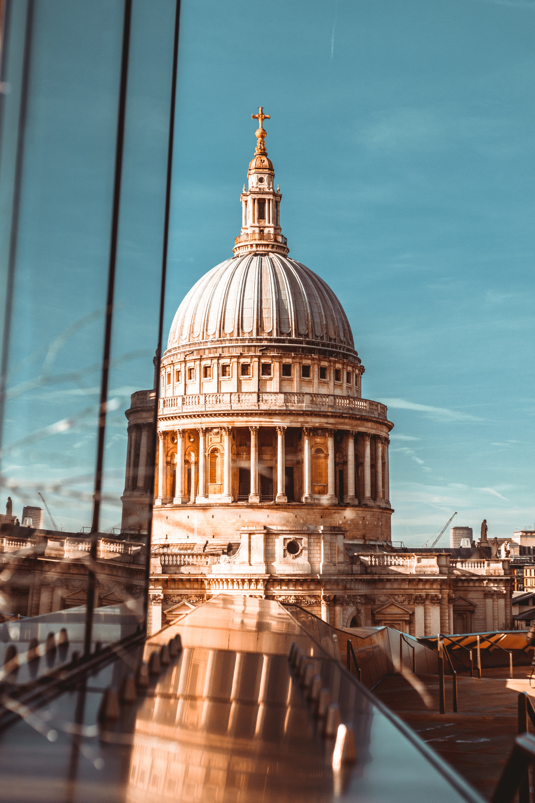
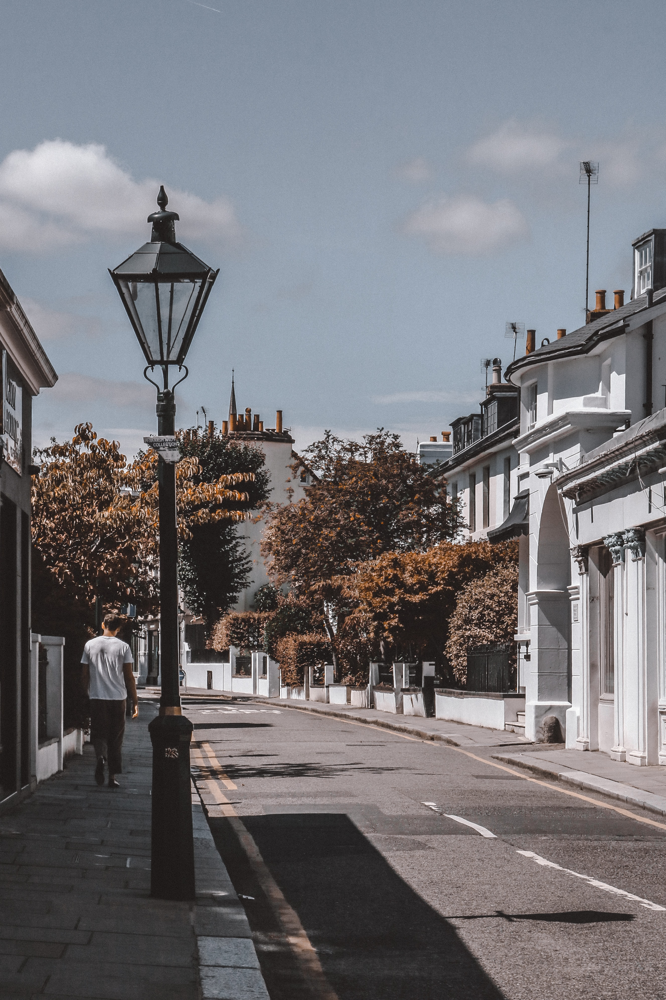
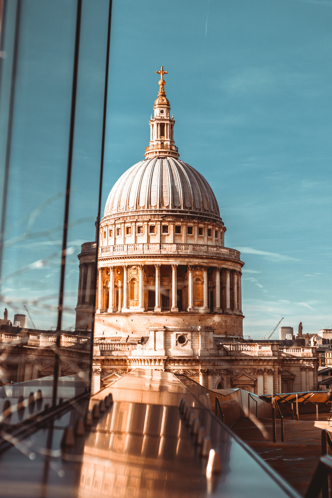
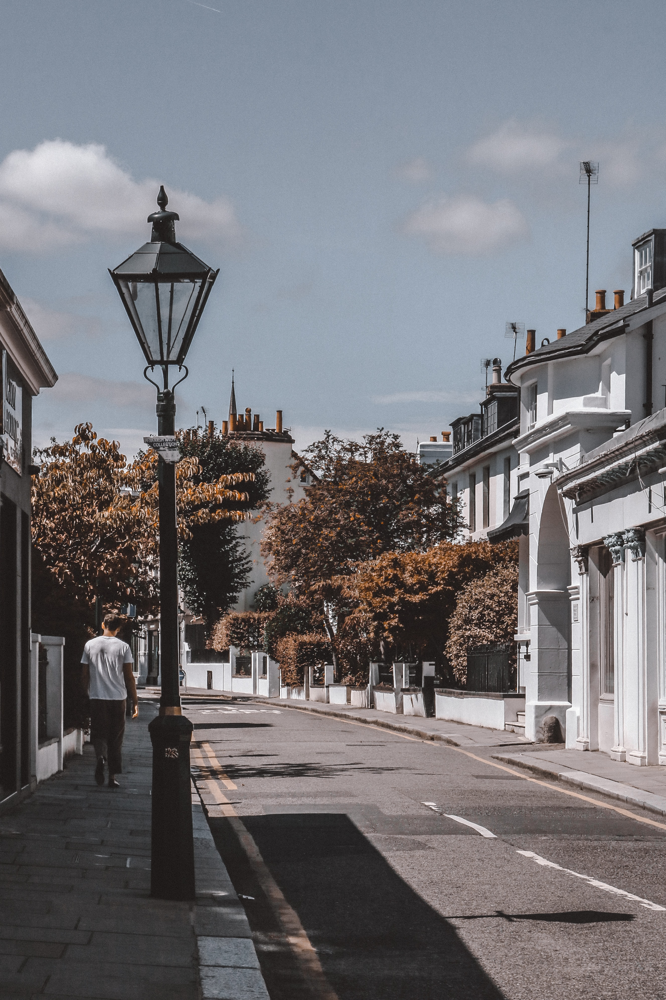

Welcome
Traveling the world isn't just fun and exciting;
there's ample research to suggest it's highly beneficial for your physical,
mental and emotional health as well.
Now that you know you can gain a lot from packing the bags and visiting places you've never been,
what are you waiting for to plan your next trip?
Your health will thank you for it!


 


